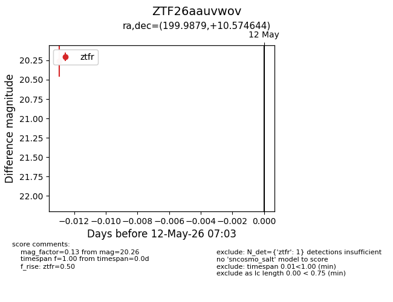
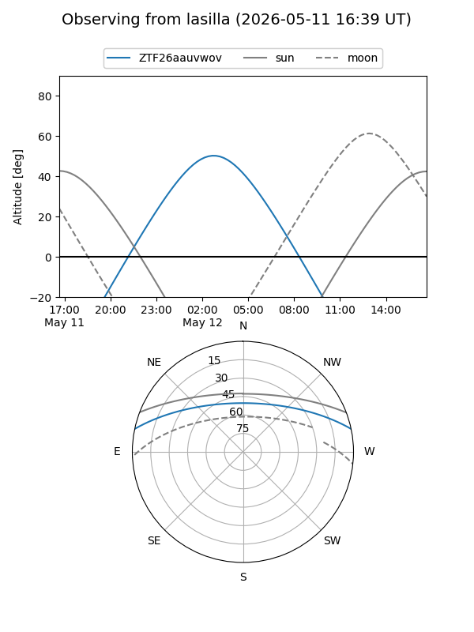
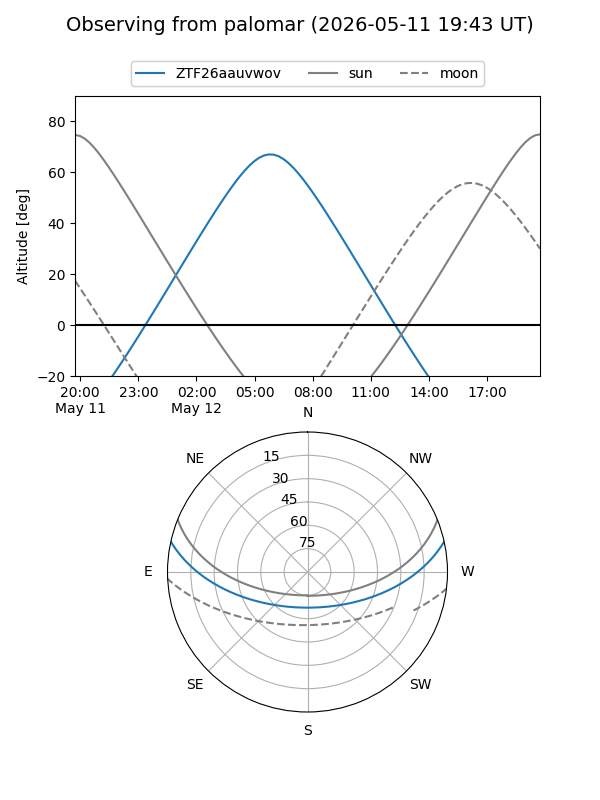

ZTF26aauvwov
Target ZTF26aauvwov at 2026-05-12 07:05
Aliases and brokers:
FINK: link
Lasair: link
ALeRCE: link
alt names
ZTF26aauvwov (ztf,fink_ztf)
Coordinates:
equatorial (ra, dec) = 199.9879,+10.57464
equatorial (HMS+DMS) = 13:19:57.11,+10:34:28.72
galactic (l, b) = (326.3651,+72.13671)
Flags:
Photometry:
last ztfr=20.26
1 ztfr detections
Lightcurve

Visibility


Additional plots